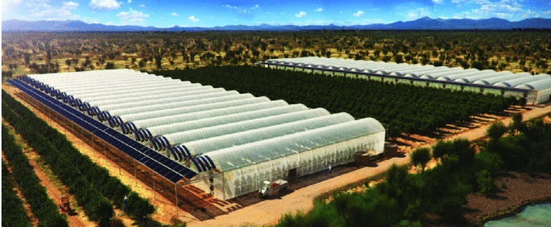

Sea Water greenhouse

- The technique involves pumping seawater (or allowing it to gravitate if below sea level) to an arid location
- It is used to humidify and cool the air
- It is evaporated by solar heating and distilled to produce fresh water.
- The freshwater produced can also be used for irrigation, eliminating the need to rely on other water sources.
- The seawater greenhouse is a response to the global water crisis.